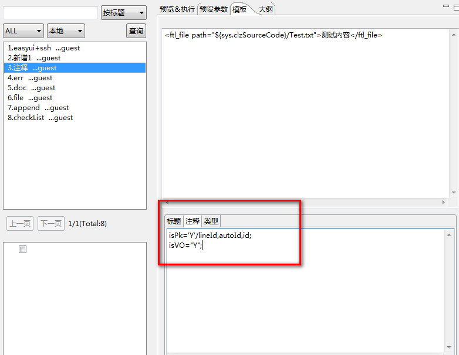
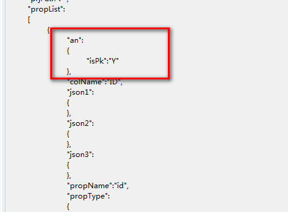
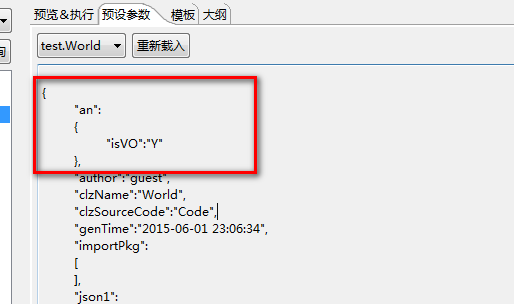
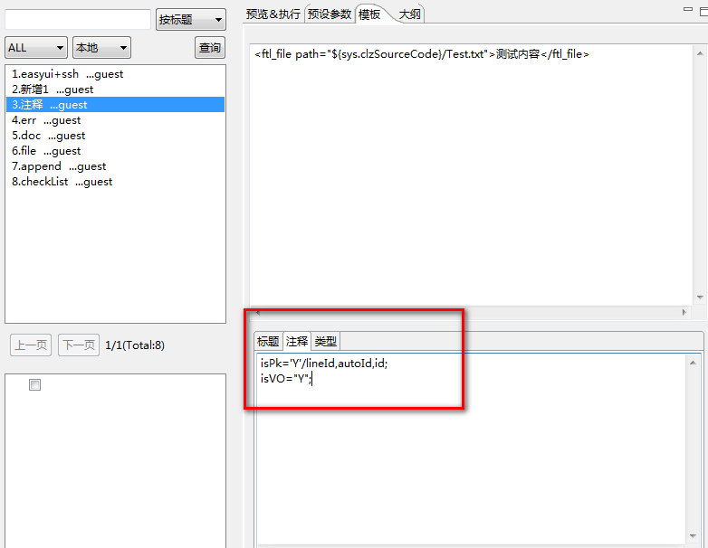
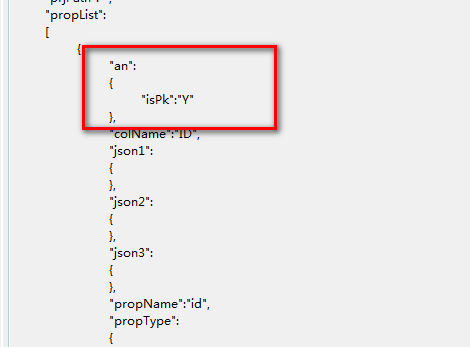
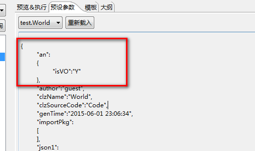
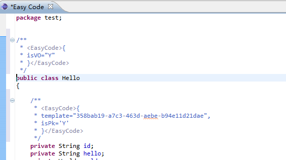
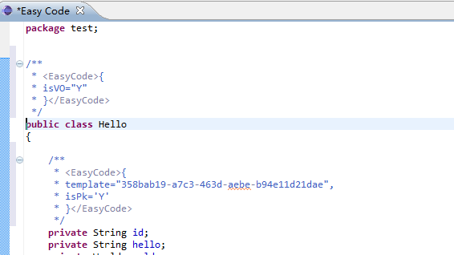
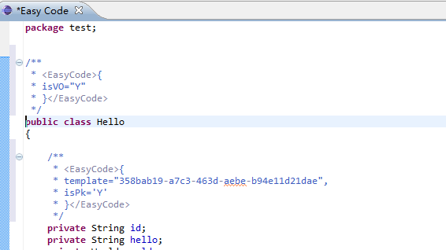

1.默认注释.
通过对对象属性，或者类 添加注释,表达一定的业务意义,注释包括两种，一种是注释在属性上，一种是注释在类上。
【属性注释:】 注释/属性名; 以分号结尾,多个属性用分号分割，支持正则匹配.
【类注释: 】 注释; 以分号结尾
注释实际上是一对对的key,value的组合。
eg:
isPk="Y"/id,lineId;表示名称为id,lineId的属性(或方法)默认有了isPk="Y"的注释.
isVO="Y";表示类默认有了isVO="Y"的注释.


tips:注释也是支持freemarker语法的，
eg:
2.修改注释【属性注释:】 注释/属性名; 以分号结尾,多个属性用分号分割，支持正则匹配.
【类注释: 】 注释; 以分号结尾
注释实际上是一对对的key,value的组合。
eg:
isPk="Y"/id,lineId;表示名称为id,lineId的属性(或方法)默认有了isPk="Y"的注释.
isVO="Y";表示类默认有了isVO="Y"的注释.


tips:注释也是支持freemarker语法的，
eg:
有时候对象的属性设置上可能不是按照注释来设置,可以通过如下方式修改。
选中java文件->右键->打开方式->Easy Code,有鼠标选中一段文本，然后点"添加注释"菜单，即文本中包含了的属性，类头会自动添加上注释,见下图：
 

生成的注释内容包含在<EasyCode/>中,也是个完整的json对象，在修改注释内容时，确保<EasyCode/>内容是正确的json格式。 注释修改后，可以在【预设参数】中看到json值会自动更新过来。
生成的注释内容包含在<EasyCode/>中,也是个完整的json对象，在修改注释内容时，确保<EasyCode/>内容是正确的json格式。 注释修改后，可以在【预设参数】中看到json值会自动更新过来。